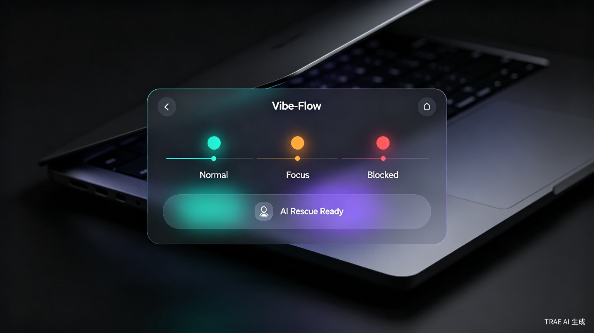
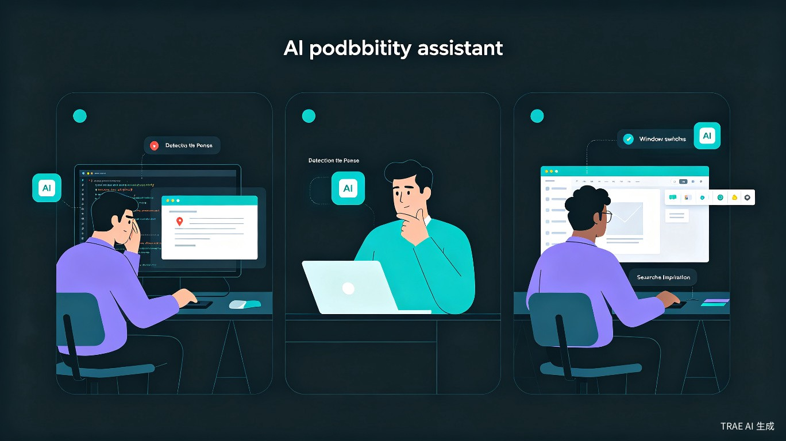
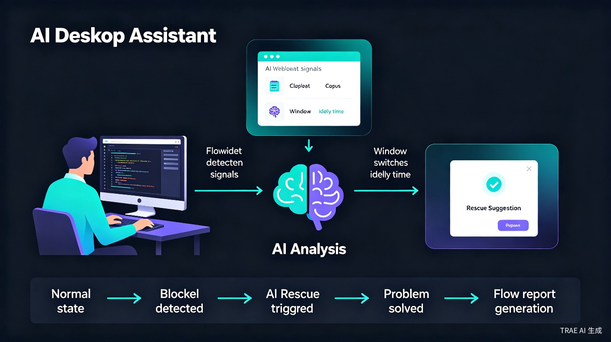
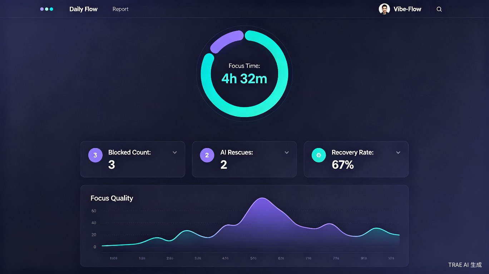
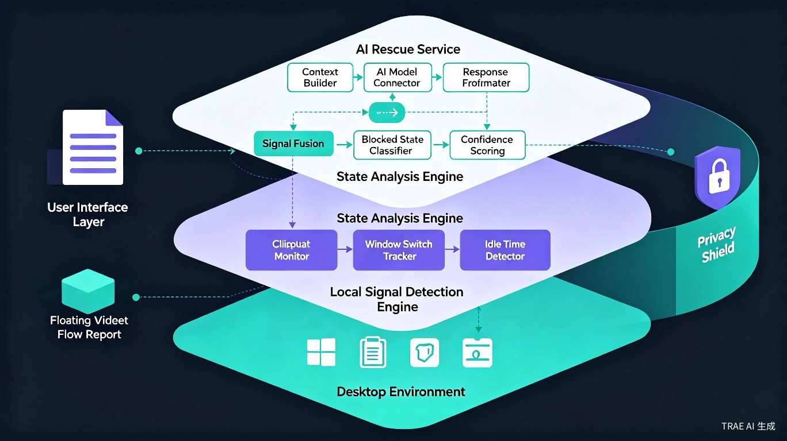

AI 注意力救援与工作流重建助手
在你还没意识到自己被卡住之前，主动帮你突破瓶颈
Vibe-Flow 是一款基于 AI 的桌面效率助手，以悬浮窗形式运行在电脑端。它通过感知用户的工作状态信号，在用户陷入卡顿时主动提供问题分析、解决建议和工作流辅助，帮助用户更快恢复专注状态。

对于程序员、设计师、运营、产品经理等知识工作者来说，工作中最常见的问题并不是不会做，而是频繁被打断、分心或卡在某个问题上迟迟无法推进。大量时间被浪费在无效搜索、重复尝试和上下文切换中，导致专注力下降和工作效率降低。
Vibe-Flow 不是一个普通 AI 聊天助手，而是一个 AI 桌面 Agent。它的核心价值是在用户还没主动求助之前，先发现用户的工作阻塞，并用最轻量的方式帮助用户恢复工作流。
遇到报错反复搜索、在 StackOverflow 和 IDE 之间来回切换，上下文不断丢失
缺乏灵感时频繁切换浏览器找参考，注意力被碎片化信息不断分散
写方案时卡在某个段落，反复修改却找不到突破口，效率持续下降
面对复杂论文或实验问题，不知道下一步如何推进，容易陷入拖延
缺乏外部监督，容易分心，需要自我管理工作节奏和专注力

如果没有 Vibe-Flow，用户往往需要不断切换浏览器、搜索引擎、论坛或 AI 对话工具寻找答案。在这个过程中，大量时间消耗在信息筛选和上下文恢复上，容易产生挫败感和焦虑情绪，最终影响工作质量和效率。
Vibe-Flow 不会简单地把"用户停下来"判断为卡住，而是通过多个行为信号综合判断，避免把正常思考误判成卡顿。
如果用户在短时间内多次复制相似的报错信息、代码片段、错误日志，系统会判断用户可能正在反复寻找解决方案。
如果用户在 IDE、浏览器、搜索页面、AI 对话工具之间高频切换，说明用户可能正在查资料、找答案，存在工作阻塞。
如果用户在某个工作软件中长时间无输入，同时前面出现过复制报错、搜索错误信息等行为，系统会进一步提高"卡住"的判断权重。

MVP 阶段采用轻量、可控的上下文获取方式，不做高风险的全屏读取：
用户最近复制的报错信息、代码片段、文案片段、问题描述等。
判断用户正在什么场景下工作（VSCode、Chrome、Word、PPT、Figma 等）。
当 Vibe-Flow 弹出提示后，用户可以选择发送当前剪贴板内容给 AI，也可以手动补充说明。
Vibe-Flow 的隐私原则是：默认本地处理，用户确认后才发送。
窗口切换频率、剪贴板变化、停顿时间等，只在本机用于判断状态，不默认上传
只有用户点击"帮我分析"后，Vibe-Flow 才会把必要的剪贴板内容发送给 AI 模型
用户可随时暂停监听，或开启"仅手动触发模式"，让 Vibe-Flow 只在主动点击时工作
只保留必要的状态统计数据（专注时长、救援次数），不长期保存剪贴板原文
Vibe-Flow 和现有 AI 工具的最大区别是：它不是等待用户提问，而是在用户卡住时主动发现问题。
| 维度 | ChatGPT / Claude | Cursor / Copilot | Vibe-Flow |
|---|---|---|---|
| 触发方式 | 用户主动打开网页提问 | 代码编辑时自动补全 | 主动检测用户卡顿状态 |
| 上下文获取 | 用户手动粘贴 | 当前代码文件 | 剪贴板 + 窗口标题 + 用户确认 |
| 覆盖场景 | 通用对话 | 代码编辑 | 桌面级全场景覆盖 |
| 工作流角色 | 问答工具 | 编程助手 | AI 工作状态管家 |
| 核心价值 | 回答问题 | 辅助编码 | 恢复工作流连续性 |
ChatGPT 需要用户自己打开网页、复制问题、组织语言、发起提问。Cursor 和 Copilot 主要服务于代码编辑场景，对非编程工作支持有限。
而 Vibe-Flow 的核心价值是：当用户还没意识到自己已经陷入低效状态时，它可以通过行为信号识别用户可能被阻塞，然后主动弹出轻量提示，并自动整理上下文，帮助用户快速进入解决问题的状态。
比赛版不做大而全的效率平台，而是先完成一个最小闭环。
显示当前状态：Normal、Focus、Blocked，提供直观的视觉反馈
通过剪贴板变化、窗口切换频率、停顿时间判断用户状态
当用户多次复制报错信息，或在 IDE 和浏览器之间频繁切换时，系统进入 Blocked 状态
弹出提示："看起来你可能卡住了，要我帮你分析一下吗？"
用户确认后，Vibe-Flow 将剪贴板内容和简单上下文发送给 AI，返回问题原因、解决建议和下一步操作
记录用户今日专注时间、卡顿次数、AI 救援次数，生成简洁的心流报告

用户遇到问题 → 多次复制报错 → Vibe-Flow 识别卡顿 → 悬浮窗主动提示 → 用户点击"帮我分析" → AI 给出解决方案 → 系统记录一次救援 → 生成今日心流报告

剪贴板监听、窗口切换追踪、输入空闲检测，全部在本地运行
信号融合、卡顿状态分类、置信度评分，本地决策不上传
上下文构建、AI 模型连接、响应格式化，仅在用户确认后触发
悬浮窗状态展示、救援提示弹窗、心流报告可视化
Vibe-Flow 能够主动识别用户可能陷入阻塞的状态，并结合当前上下文快速提供解决方案，减少用户在搜索和试错上的时间成本。相比传统效率工具，它不需要用户主动管理任务，而是在恰当时机主动介入，帮助用户保持工作连续性。
随着 AI Agent 和智能办公的发展，越来越多个人用户和企业开始关注专注力管理与效率提升。Vibe-Flow 可以面向开发者、创作者和企业团队提供订阅服务，帮助用户节省时间成本，提高产出效率，具备较好的商业化潜力。
现代社会普遍面临注意力碎片化问题。Vibe-Flow 希望通过 AI 技术帮助人们减少无效内耗、缓解工作焦虑，让更多时间投入到创造性工作和深度思考中，从而提升整体学习与工作体验。
Vibe-Flow 是一个能发现你什么时候被工作卡住，并主动帮你突破瓶颈的 AI 桌面助手。